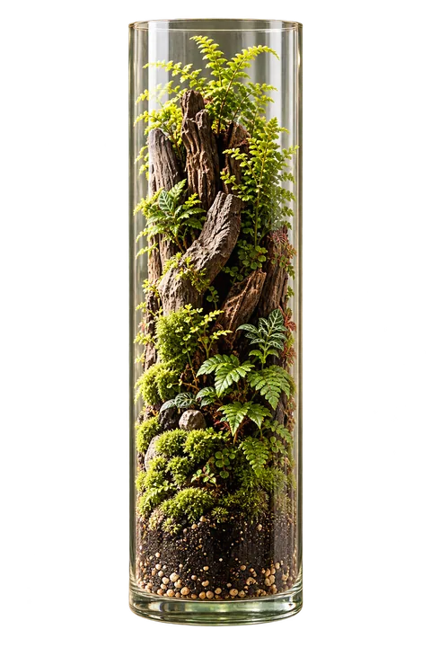
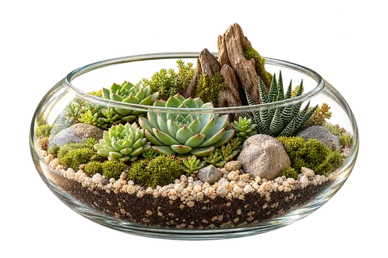
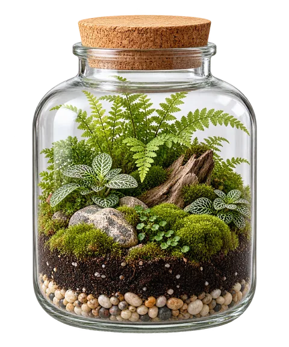
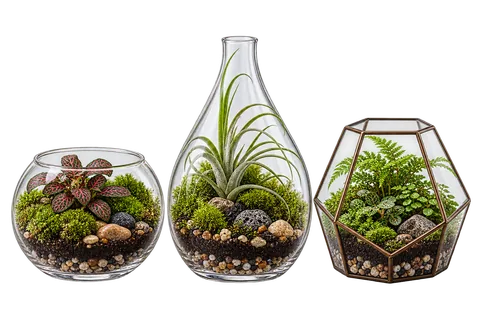
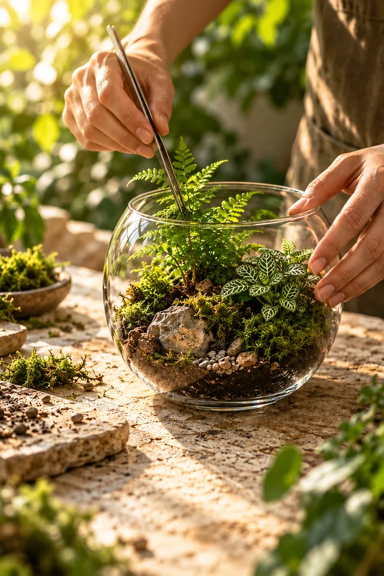

Natureza
também
vive
dentro
de casa
Plantas pessoas ambientes melhores
Pequenos mundos.
Grandes conexões.
Explore os terrários
Mais verde
para um mundo
mais humano
Escolha o seu universo
Diferentes formas
de viver o verde




Nossa essência
Pequenos detalhes.
Uma conexão maior.
Um encontro entre natureza, criatividade e cuidado em cada composição.
- Natureza em miniatura
- Cuidado em cada detalhe
- Beleza para o seu espaço
A Terrários Jundiaí em números
Seletor
Qual terrário combina com você?
Pequenos mundos que já criamos
Quem já tem um pequeno mundo
Perguntas frequentes
Contato
Vamos criar o seu
pequeno mundo?
Conte onde você imagina o seu terrário e a gente ajuda a escolher.